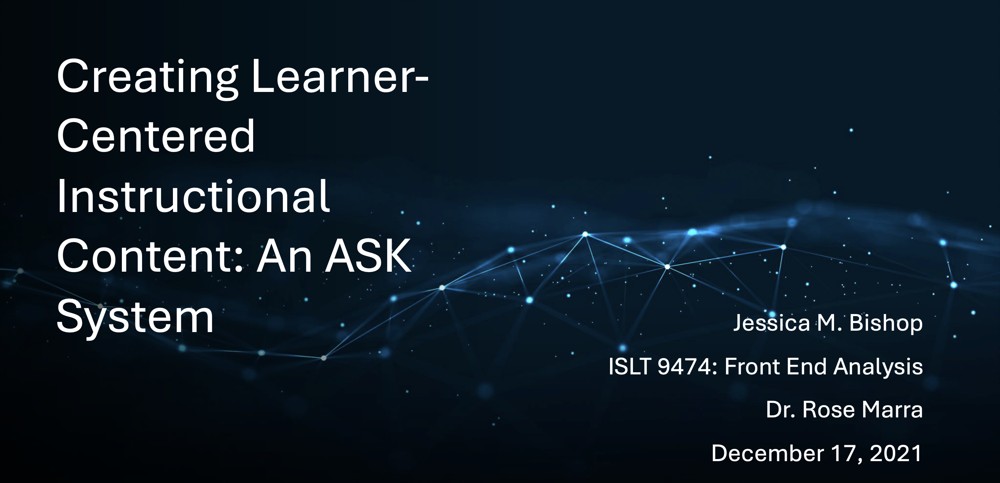
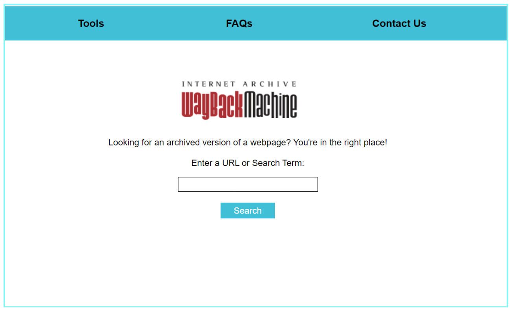
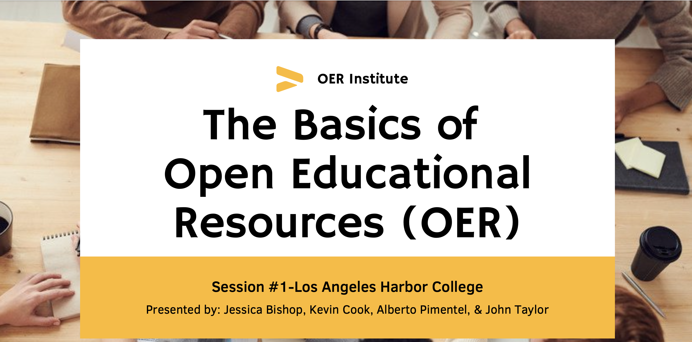

LTD Goals
The Learning Technologies and Design (LTD) program at the University of Missouri includes the following three competencies:
- Goal 1: Design and development of learning systems
- Goal 2: Front-end analysis and system evaluation
- Goal 3: Leadership & social responsibility
I aligned the program competencies with the following projects: Creating Learner-Centered Instructional Content: An ASK System, Wayback Machine Redesign, and OER Adoption Strategies for Adjunct and Full-time Faculty at Los Angeles Harbor College: Adding Quality OER into Courses.
Project 1: Creating Learner-Centered Instructional Content: An ASK System
The Creating Learner-Centered Instructional Content: An ASK System project fulfills the LTD program’s first competency, Design and Development of Learning Systems. In IS_LT 9474: Front End Analysis of Systems, we created an ASK system around a topic. An ASK system assembles information as if discussing it with an expert with the intent of helping someone learn it. I used Microsoft PowerPoint to design an ASK system to help instructional designers write clear, concise, and consistent instructional content using plain writing, organization and structure, and content curation.
The ASK system provides a firm foundation for creating learner-centered writing. I had to make adaptations to the ASK system to build it in PowerPoint, and if I could do it differently, I would use a webpage or app design to deliver the content.
Project 2: Wayback Machine Redesign
The Wayback Machine Redesign fulfills the Front-end Analysis and System Evaluation competency. The Wayback Machine allows users to view archived versions of websites. The site’s unintuitive design makes the site difficult to use. In IS_LT 9461: Interaction Design, I worked with a group to design, develop, prototype, and evaluate a reimagined Wayback Machine.
The Wayback Machine Redesign included strong interaction design principles. We used Microsoft PowerPoint to create our lo-fi prototype; however, we encountered issues implementing those principles into our hi-fi prototype due to the limitations of the Justinmind prototyping tool. If our team had more time, we would have chosen a different prototyping tool to develop the design.
Due to difficulties with the tool, we created a video walkthrough of the Wayback Machine Redesign.
Project 3: OER Adoption Strategies for Adjunct and Full-time Faculty at Los Angeles Harbor College: Adding Quality OER into Courses
The OER Adoption Strategies project fulfills the Leadership & Social Responsibility competency. In IS_LT 9471: Instructional System Design, I worked with a group to design an instructional design document. Our team chose to deliver an OER Institute to community college faculty to encourage the adoption of open educational resources (OER) in their courses.
We had quality data for this project, so it allowed us to create a realistic instructional design scenario based on actual learner needs. We built our OER Institute using Microsoft Word (the schedule) and PowerPoint (slides). We included two presentations: The Basics of Open Educational Resources (OER) and Searching for OER. The project resulted in an accurate representation of the assignment requirements.